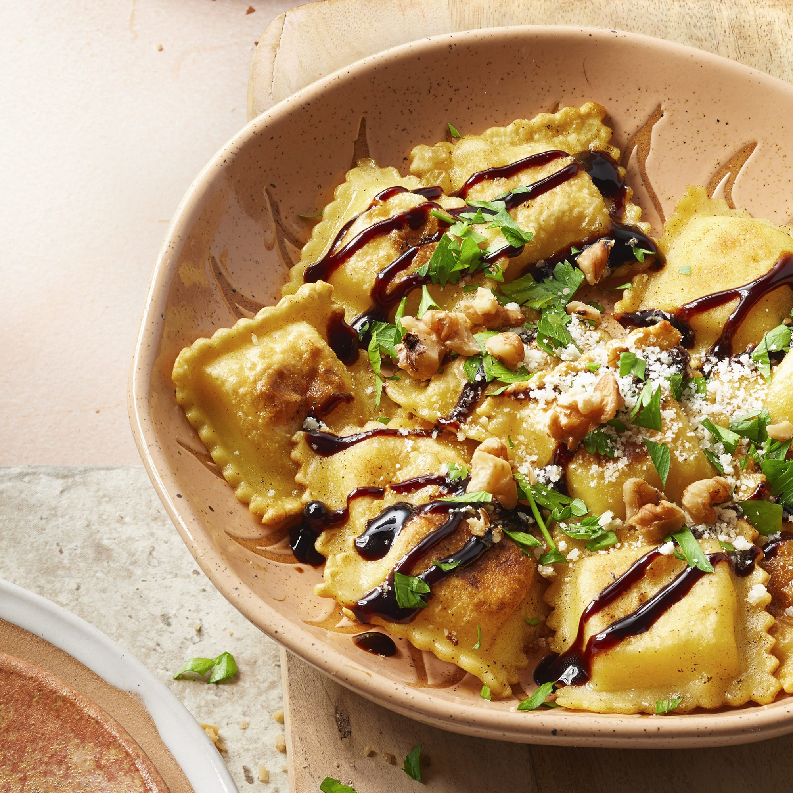

Mediterranean Recipes
Long sits, good food and deep conversations about everything and about nothing...
your go-to website for meals with a taste of the sea.
Balsamic Ravioli

Look at this italian beauty. Try this pasta recipe as eaten in the land of Da Vinci and Dante.
There's so much more in pasta than just spaguetti and meatballs, that's why at Mediterranean Recipes we made this delicious recipe, because everyone deserves to discover this plate as it is, a world of possibilities. In that matter, we chose this recipe that's totally different from what we are used to in terms of flavors, to broaden your spectrum of what pasta could be, being at one time, fresh and simple.
For this time, we kept it easy so it won't take too much of your time, so it's fine if you want to buy an already made pasta, just remember to buy it hand-made in a specialized pasta store and not in a conventional store-chain, it'll make a huge difference. But if you want to make your pasta from scratch, by all means go ahead, it's gonna be worth it, here's our recipe for that!
Ingredients
½ cup walnuts
1 package of bought ravioli of your choice, or 25 ounce of homemade ravioli
2 tablespoons butter
2 tablespoons balsamic vinegar
¼ cup grated Parmesan cheese
Steps
- Toast walnuts in a skillet over medium heat; cook and stir until browned and fragrant, 8 to 10 minutes. Remove from skillet.
- Fill a pot with lightly salted water and bring to a rolling boil; stir in ravioli and return to a boil. Cook uncovered, stirring occasionally, until the ravioli float to the top and the filling is hot, 3 to 5 minutes. Drain.
- Warm butter in a skillet over medium heat until slightly brown, about 1 minute. Add balsamic vinegar; cook and stir until melted and combined, 1 to 2 minutes. Stir in ravioli; mix until combined. Top with walnuts and Parmesan cheese.